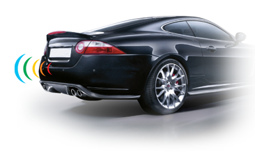
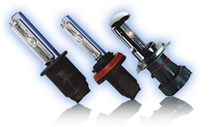
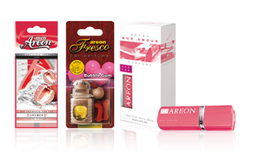
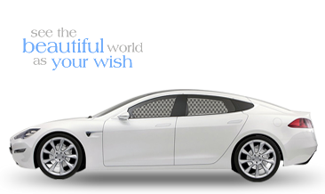
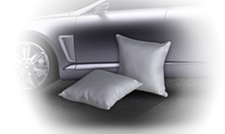
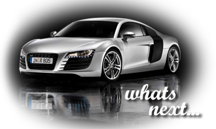

P8 Parking Sensors come in 3 variants to suit your requirements. All the variants are designed to provide you with information about the distances of your car from various objects while you are reversing your vehicle.  High Intensity Discharge System The P8 Xenon Conversion Kit offers drivers state of the art lighting technology an easy way to convert from halogen to Xenon headlight.  Car Perfumes From Europe With it's carefully selected natural fragrances, Areon brings freshness in your car, home and office.  Privacy that you needed High Quality Car curtain, Auto shade, Car window shade, Car sunshade and more...  P8 brings to you a Chic and Fashionable range of Car products under the FINGO Brand. Defined by their distinctive style and comfort, P8’s FINGO brand products will help you stylize your Car and give you the desired comfort during your drive.  Moving on... Beyond these international quality products, it is our constant endeavour to integrate latest quality products to our exiting range.  About Amritras India P8 Parking Sensors P8 HID Light P8 Areon Perfume P8 Window Curtain fingo Products What's NEXT